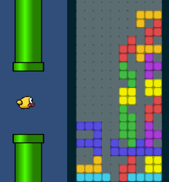

Info


| Name: | Jure Bevc |
| Email: | bevc.jure@gmail.com |
Neural networks are a popular and powerful tool in machine learning techniques. These networks can be used, implemented and designed in various ways, so that they best fit the problem they are trying to solve. At its most basic form, the neural network is represented by a connected set of nodes. Every connected is assigned a weight, that changes the information that travels between connected nodes.
The performance of these networks can differ greatly depending on how we adjust these weights. One of the more popular apporaches uses a method called gradient descent, which is based on finding a local minimum of a differentiable function.
Another way to adjust the weights is through genetic algorithms, which are based on evolution. In this example, genetic algorithms and neural networks were used to train agents that can play simple video games well. The approach was tested on two popular games - Flappy bird and Tetris:
This project was part of by bachelor thesis and is available on my GitHub. My paper that explains this approach in more detail can be downloaded here.